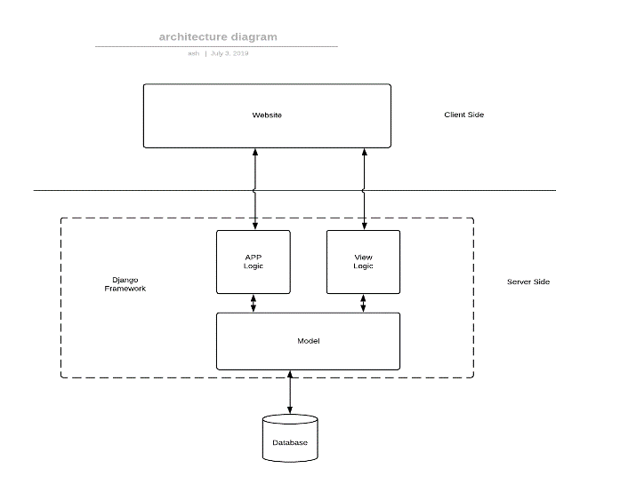

BlueWaveCook
Requirement Document
CP317
1 introduction1.1 the purpose of this document:
This document states the requirement and specification for our recipes website. This document contains design and structure .
1.2 the scope:This software is a web app which is called BlueWaveCook. It is going to be used by everyone who is interested in cooking.
1.3 acronmys:2. Current System Description
2.1 The Purpose:
1. This is a web-based application with two main components. First, the frontend is responsible for getting user’s information to log them in or to get a list of their ingredients and finally showing them a recipe. The other being the backend that has database of recipes, which gets sent back to the front upon finding a recipe match based on the user’s ingredient list, and user profiles which allows the users to give their feedback on a recipe. .
2.2 Product functions:1. Search a recipe based on ingredients available
2. Search recipe relating to a diet
3. Creating a profile and saving/pinning user’s favourite recipe
4. Rating and commenting on a recipe
.
1. General user
2.4 constrains:
1. Database space limitation
2. Internet connectivity and a device necessary to access it
3. Can’t be downloaded as a mobile application as it needs a web browser to access it.
- 3.1 diagram: 